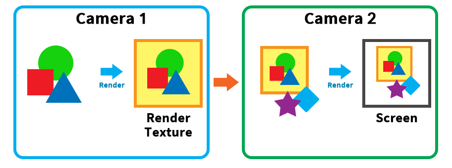
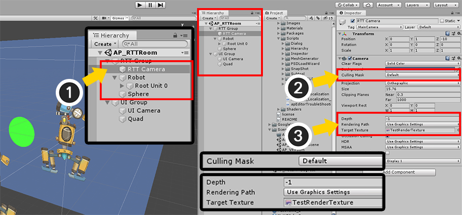
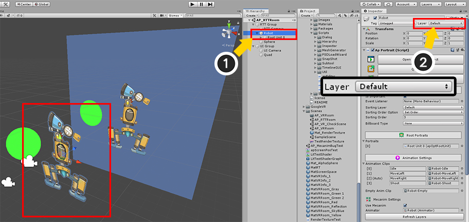
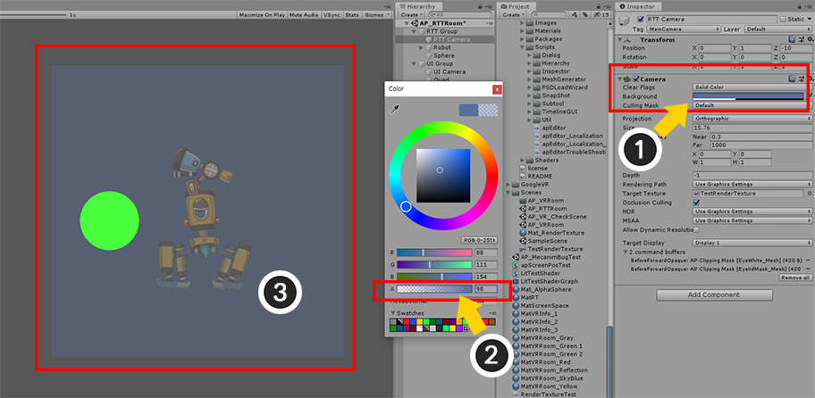
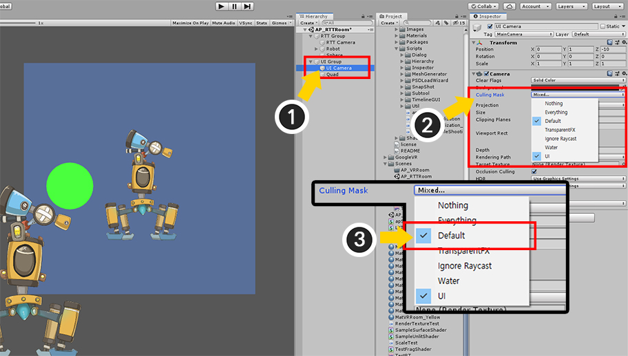
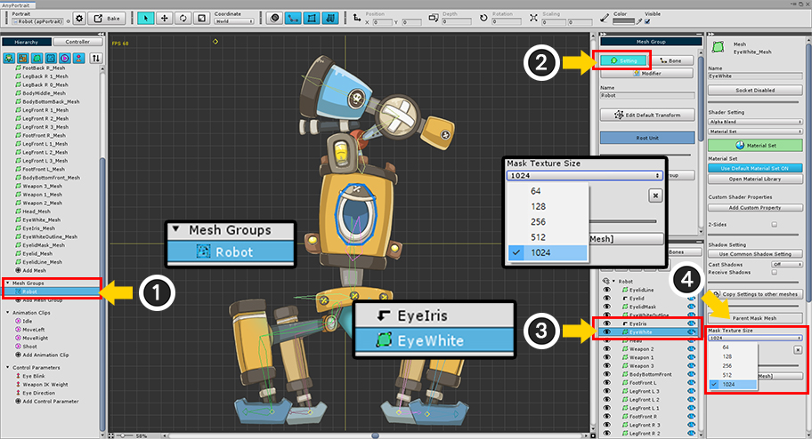
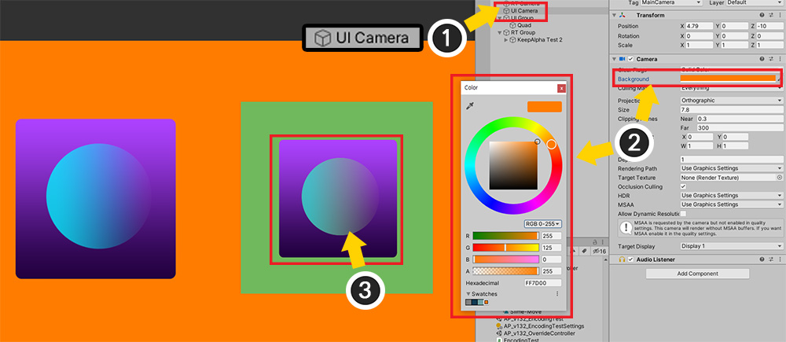
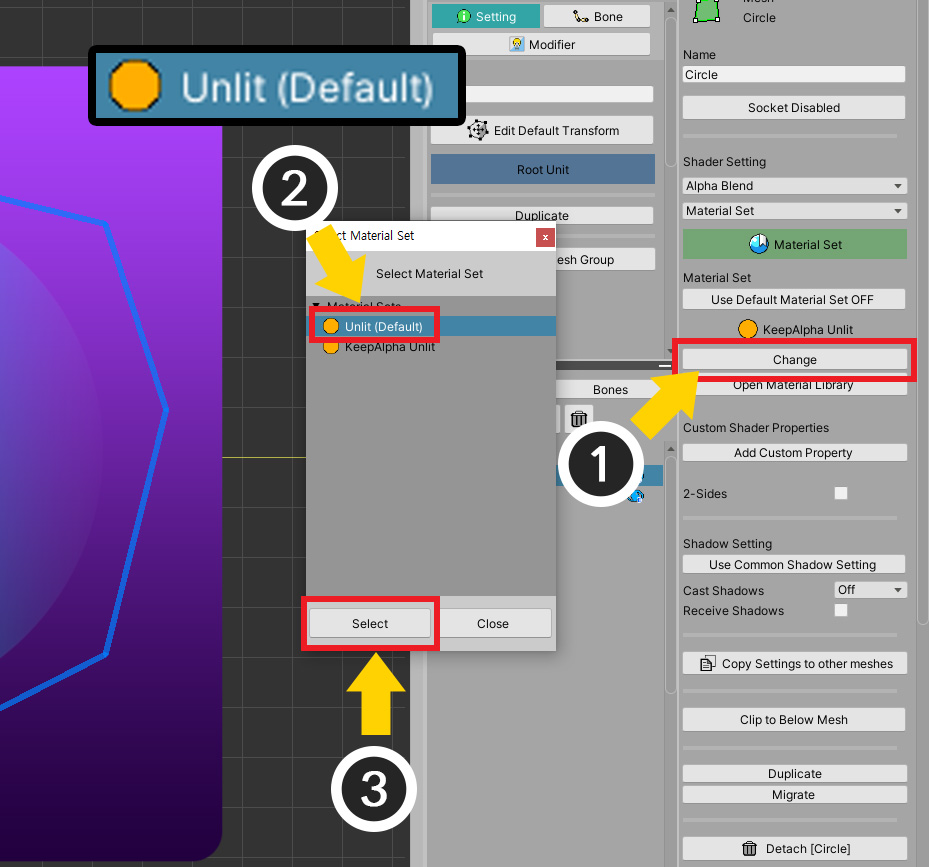
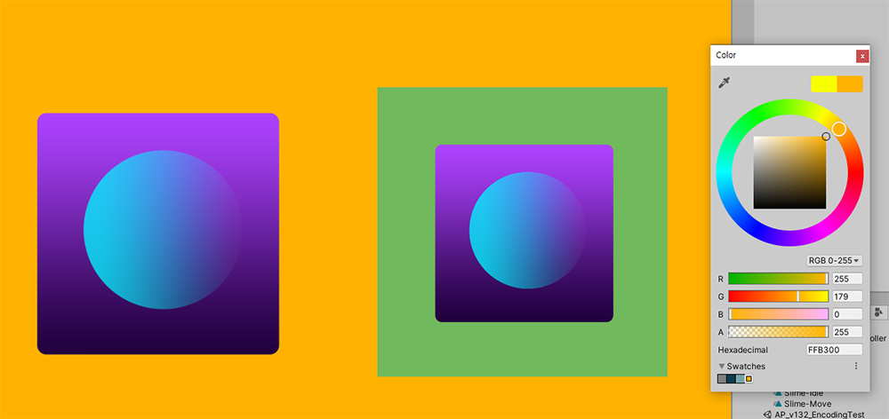

AnyPortrait > マニュアル > 「Render Texture」でレンダリング
「Render Texture」でレンダリング
1.2.0
ゲーム画面を別々のテクスチャに保存する手法を利用すれば、ゲーム内で看板や鏡などを表現することができます。
キャラクターをゲームのHUDに出力することも可能であり、その他の多くの活用方法があります。
この手法は、カメラの「Target Texture」プロパティでレンダリングテクスチャ（Render Texture）を指定することで簡単に実装できます。
AnyPortraitはUnityのレンダリングコンポーネントである「Mesh Renderer」を使用するので、一般的には、問題なく、この手法が適用される場合があります。
しかしながら、ユーザーの方々からのフィードバックに基づいて、特殊な状況で発生する問題点についてv1.2.0での改善された。
このページでは、レンダリング、テクスチャにレンダリングする方法を含んで、いくつかの問題点と解決方法を紹介します。
レンダリングテクスチャを利用して描画

レンダリングテクスチャを利用したレンダリングを試みるシーンを構成しました。
上記シーンは、2つのカメラが配置されており、「AnyPortraitで製作されたキャラクター」、 「Sphereメッシュ」、「レンダリングテクスチャが適用されたQuadメッシュ」が配置されました。

一般的に、レンダリングテクスチャを利用する方法は、上記になります。
最初のカメラでレンダリングテクスチャを対象にオブジェクトをレンダリングします。
第二カメラは画面を対象にレンダリングテクスチャを含む他のオブジェクトをレンダリングします。
この方法でレンダリングするように設定してみましょう。

(1) 最初のカメラを選択します。
(2) 「Culling Mask」を「Everything」から「Default」に変更します。今では「Defaultレイヤ」のオブジェクトだけがカメラでレンダリングされます。
(3) 「Depth」を「-1」に設定した状態で、「Target Texture」に「Render Texture」アセットを指定します。
レンダリングテクスチョウンあらかじめアセットフォルダに作成しておく必要があります。

レンダリングテクスチャアセットのプロパティです。
プラットフォームごとに多少の違いがある場合があります。
解像度を適切に調節することをお勧めします。

(1) 最初のカメラに表示されるオブジェクトを選択して、(2) 「Layer」が「Default」であることを確認します。

(1) 第二カメラを選択します。
(2) 「Culling Mask」を「UI」に変更します。
今の層がUIであるオブジェクトのみをレンダリングされ、ここで「レンダリングテクスチャが適用されたQuadメッシュ」がこれに該当します。
(3) 「Depth」を「-1よりも大きい値」に指定します。ここでは「1」に設定しました。

(1) 第二カメラによってレンダリングされる「Quadメッシュ」を選択します。
(2) 「Layer」を「UI」に変更します。
(3) マテリアルのテクスチャを「レンダリングテクスチャ」に変更します。
この時のレンダリングテクスチャは最初のカメラに適用されたものと同じです。

ゲームを実行すると、AnyPortraitで製作されたキャラクターを含むレンダリングテクスチャが正常に作成されて表示されるのを見ることができます。
半透明、透明な背景のレンダリングテクスチャを対象にレンダリングする
レンダリングテクスチャを半透明、または透明にすることができます。
カメラの背景のプロパティを透明に作れば、レンダリングテクスチャの背景も同様に透明になります。
これを利用すると、背景を除いてキャラクターのみをレンダリングすることが可能です。
しかしAnyPortraitの基本マテリアルを使用すると、レンダリングの問題が発生します。
下の説明を通し発生されるレンダリングの問題とその解決方法を確認してみてください。

(1) 最初のカメラを選択して、「Clear Flags」を「Solid Color」に設定した状態で、「Background」の色を選択します。
(2) 背景色の「Alpha」チャンネルを変更します。
(3) レンダリングテクスチャの背景がますます透明になることを見ることができます。
この状態でレンダリングテクスチャにレンダリングされるAnyPortraitのキャラクターも同様に透明になる問題を見ることができます。

背景色に応じてAnyPortraitのキャラクターがどのようにレンダリングされるか比較してみましょう。
背景が透明になったらAnyPortraitのキャラクターも同様に透明になるのに対し、横に配置された緑色Sphereは何の変化がありません。
通常の場合には、背景の透明度に関係なく、レンダリングがなければならないでしょう。
これはUnityのShaderの属性に関連する問題であり、特に「Surface Shader」で作成された場合に発生する可能性のある現象です。
したがって、この問題は、他のShaderを使用するマテリアルを適用するものとして解決することができます。

AnyPortraitエディタを開きます。
(1) 「Material Library」ボタンを押します。
(2) 「KeepAlpha Presets」を選択します。

(1) 「Unpack Preset」ボタンを押します。
新しいマテリアルプリセットがインストールされマテリアルライブラリが終了します。
マテリアルライブラリを再起動します。
(2) 2つのマテリアルプリセット（KeepAlpha Unlit、KeepAlpha Lit）が追加されました。
「Keep Alpha」プリセットは、一般的な「Surface Shader」に既存の「alpha」パラメータの代わりに 「keepalpha」パラメータを追加したシェーダで構成されます。

(1) 「Make Material Set」ボタンを押します。

(2) 「KeepAlpha Unlit」や「KeepAlpha Lit」を選択します。
このシーンには、光がないため、「KeepAlpha Unlit」プリセットを選択します。
(3) 「Select」ボタンを押します。

(1) 新たに作成されたマテリアルのセットを選択します。
(2) 「Default Material」ボタンを押して、デフォルトマテリアルに登録します。

すべてのプロセスが完了したら、Bakeを実行します。

今の背景が透明になってもキャラクターは正常に表示されます。
レンダリングテクスチャを含む同時にレンダリングする
画面に描画する際に、レンダリングテクスチャはもちろんのこと、キャラクターオリジナルも一緒にレンダリングする必要がある場合もあります。
基本的には、この方法は、「多数のカメラでレンダリングする」と同じです。
したがってVRレンダリングで発生する問題と同様の問題がここでも発生します。
いくつかの問題が発生するか、そしてどのように解決するかを、以下の説明を通し確認してみましょう。

(1) 画面にレンダリングをする第二のカメラを選択します。
(2) 「Culling Mask」オプションを変更します。
(3) 従来の「UIレイヤ」を設定した状態で、さらに「Defaultレイヤ」を選択します。
今では「Defaultレイヤ」のオブジェクトも画面に表示されるでしょう。

ゲームを実行すると、レンダリング、テクスチャもレンダリングがされ、
同時に画面に元のキャラクターと他のオブジェクトが同時にレンダリングされたことを見ることができます。
しかし、この場合に、「クリッピングマスク」の部分が異常にレンダリングされたことを見ることができます。
（これはレンダリングテクスチャの変見られることもあり、逆にソースが変見られることがあります。）

この問題は、「VRレンダリング」で見ることができる問題と似ているので、解決方法も同じです。 （関連ページ）
(1) AnyPortraitエディタを開いて、「Bake」ボタンを押します。
(2) 「Setting」タブをクリックします。
(3) 「VR Option」の値を「Multiple Cameras」に変更します。

レンダリングテクスチャとキャラクターのソースがすべて正常に表示されるのを見ることができます。
しかし、複数のカメラを利用してレンダリングをする場合には、
「クリッピングマスクの品質補正」ができない場合がありますので、
上の画面のようにクリッピングがされている領域が異常に見られることができます。 （関連ページ）

クリッピングマスクの解像度を増加させて、この問題を解決することができます。
(1) 「メッシュグループ」を選択します。
(2) 「Setting」タブを選択します。
(3) 「クリッピングマスクがされているメッシュ」を選択します。
(4) 「Mask Texture Size」の値を増加させます。

Bakeをしてゲームを実行すると、クリッピングマスクの問題まで解決されたことを見ることができます。
「Keep Alpha」材質の色の問題を解決
背景が透明なレンダリングテクスチャを作るために「Keep Alpha」材質を使用すると、色が変に表示される場合があります。
画像が半透明な場合は、この問題を見ることができます。
もし半透明なイメージが不透明な画像の上に位置する場合、この問題を、以下の方法で解決することができます。

説明のために不透明な紫色のメッシュと半透明の青いメッシュが上記のように準備された。

透明な背景のレンダリングテクスチャを作成ので、上記の説明のように、「KeepAlpha Unlit」材質を適用した。

上記のようにシーンを構成しました。
(1) 左はAnyPortraitで製作したオリジナルです。
(2) 右は、レンダリングテクスチャが適用された正方形メッシュです。

(1) レンダリングテクスチャを作成するカメラを選択します。
(2) Backgroundプロパティを選択し、 (3) 背景色をますます透明に変更します。
(4) レンダリングテクスチャの背景色が透明に変わるのを見ることができ、現在はオリジナルと大きく変わらないに見えます。

問題は、レンダリングテクスチャの背景ではなく、画面を描画するカメラの背景色がグレーではない場合です。
(1) 画面を描画するカメラを選択します。
(2) 背景色をグレーではなく、色に変更しましょう。
(3) レンダリングテクスチャ上でメッシュの半透明な部分の色が異常に変わるのを見ることができます。

(1) もし背景色を白に変えると、
(2) レンダリングテクスチャ上でメッシュの半透明な部分が過度に明るくなるのを見ることができます。
不透明なメッシュが後ろにいるにもかかわらこの問題は発生します。

前の3つの場合を集めてみました。
レンダリングテクスチャ上でメッシュの色が歪曲されることが確実に見えます。

この問題は、「Keep Alpha」材質の問題なので、そのメッシュの材質を元の材質に変更する必要があります。
AnyPortraitエディタを開いて、メッシュグループの「Settingタブ」が選択された状態で、そのメッシュの材質を変更します。
(1) 半透明のメッシュを選択します。
(2) 材質の設定で「Use Default Material Set」ボタンを押して、「OFF」の状態に変更し

(1) 「Changeボタン」を押します。
(2) 基材である「Unlit（Default）」を選択します。
(3) 「Selectボタン」を押して適用します。

Bakeをして、再度ユニティでレンダリングをすると、上記のような問題が解決されたことを見ることができます。
この解決法は、「不透明なメッシュが後ろにある場合」、レンダリングテクスチャの背景を透明にしたときに有効です。